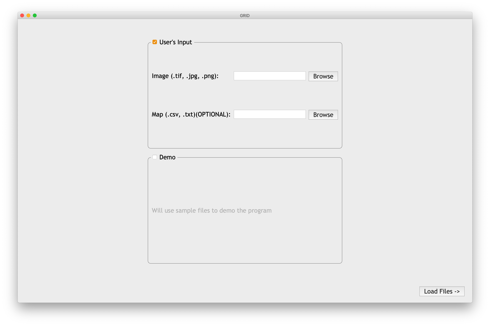

1
Installation
1.1
Windows
1.1.1
Install Anaconda
1.1.2
Install GRID
1.2
OS X
1.2.1
Install GRID
2
Overview
3
Interface and Usage
3.1
Load data
3.2
Crop Images
3.3
Plots Extraction
3.4
Set Up Central Points
3.5
Finalize plot’s boundaries
4
Gallery
GRID: Greenfield Image Decoder
Chapter 2
Overview
Here you can find the general usage of GRID in 5 steps.
Load data

Crop your image
Plots extraction
Set Up Central Points
Finalize plot’s boundaries